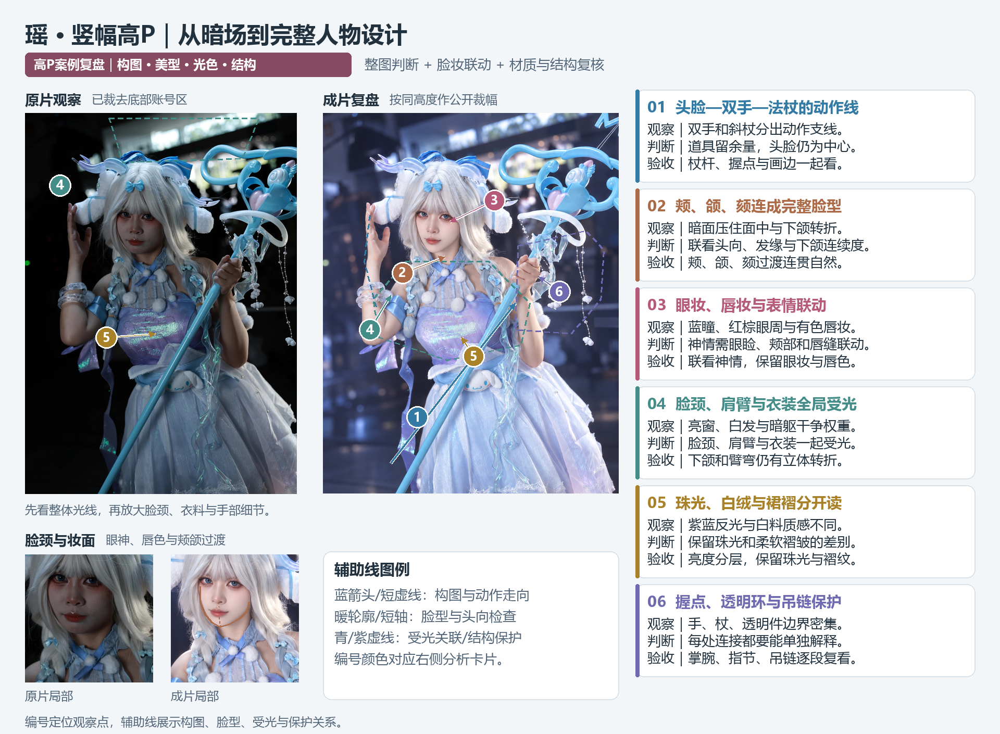
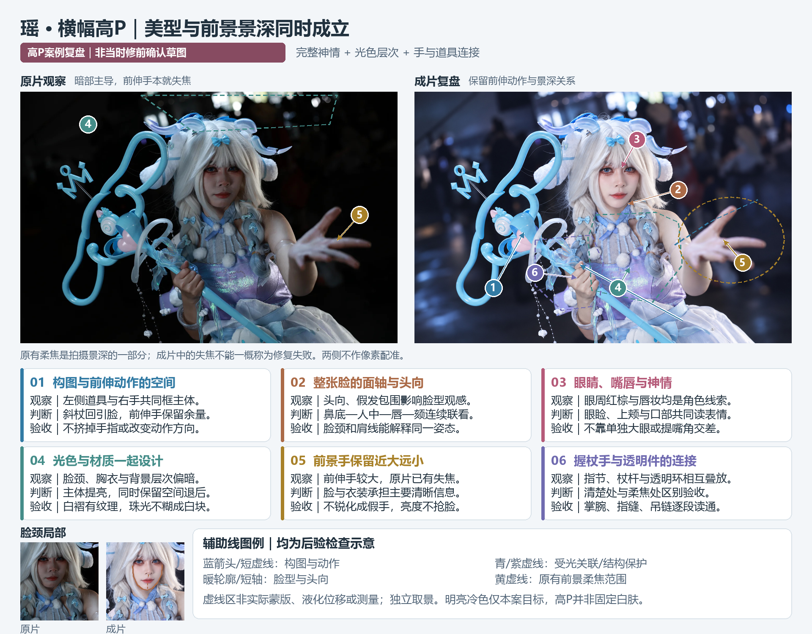

全局光：先改变明暗关系
观察：原片脸部与手臂偏暗，胸前反光亮块和背景亮窗的相对权重较高。
成片：脸、肩臂、衣料和裙面形成连续亮面，背景保留冷色空间、散景与深浅层次。
复核：看白发的卷曲、白裙的褶皱，以及鼻侧、下颌和臂弯的明暗转折。
高P精修 / 已认可成片展示
两张瑶的暗场照，展示高P如何同时改善人物美型、全局光线、衣装材质与背景氛围。竖幅侧重脸颈和完整造型，横幅保留前伸手的景深；力度由本图目标决定。
01 / 竖幅高P精修
原片亮窗与白发较亮，脸、手臂、衣料却落在暗部，观看路线容易从主体滑向上方亮块。成片让脸颈和身体重新成为画面中心，背景保留冷色空间与散景，衣装的紫蓝珠光也得到交代。

源图1440×2160，成片1569×2160。公开整图分别取1440×2020与1569×2020，裁去底部账号区后等比缩至长边1600；前后独立取景。
观察：原片脸部与手臂偏暗，胸前反光亮块和背景亮窗的相对权重较高。
成片：脸、肩臂、衣料和裙面形成连续亮面，背景保留冷色空间、散景与深浅层次。
复核：看白发的卷曲、白裙的褶皱，以及鼻侧、下颌和臂弯的明暗转折。
观察：原片人物与右上方大体积道具共享画面，道具外缘靠近画边；抬手和握杖手形成两条动作支线。
成片：头饰、双手与法杖继续服务完整造型；较宽画幅给道具和背景留出余量。
复核：沿透明环、吊链、杖杆与握点逐段检查连接，再看它们与画边的距离。
成片重新协调脸部轮廓与五官比例，眼线、下睫毛、蓝色美瞳和有光泽的唇妆仍清楚。双眼、上颊、唇缝与嘴角共同形成神情，颊颌到颈部保持连续。
冷色环境中，皮肤保留局部温度。普通皮肤的暗红得到整理，眼下红棕妆色与有色唇妆共同保留层次。
紫蓝珠光、半透明饰件、白色绒球与皮肤各有不同的反光和边缘。适屏看身体到裙面的连续光线，放大看布料纹理、腕饰、握杖手与透明环的连接。
02 / 横幅高P精修
这张照片的动作来自伸向镜头的手：近大远小与失焦本身有表现力。高P成片提高脸、假发与胸前衣装的可见度，同时让远处背景继续退后，保留前景手的景深关系。

源图1440×960，成片2160×1440，均为3:2横幅；前后独立取景、等比显示。
观察：原片眼周与鼻旁处于暗部，嘴唇颜色相对突出，脸部的细微表情不易读到。
成片：眼周可见度与肤色改善后，嘴角、唇形和颊部一起参与神情。脸部设计需结合假发包围、头部角度和颈肩姿态。
复核：联看整张脸的主轴、双眼方向、面中体积与颈肩，保持同组妆造协调。
观察：前伸手较大且失焦，握杖手、脸与衣装的清晰层次不同。
成片：保留前伸动作和失焦，脸、握杖处与衣装提供主要信息，背景维持散景和场景线索。
复核：在柔焦中看手指方向、掌腕连接与高光，再确认它们和背景的过渡自然。
红棕眼妆、下睫毛、唇缘与鼻部体积共同构成人物观感。脸部提亮后，假发边缘、颊颌、颈部肤色与颈饰也保持连续。
前景手保持柔焦，握杖手需要能解释受力与指节；透明环、杖杆、吊链和衣料反射各有独立边界。局部更好看仍要回到横幅全图，看动作是否自然、亮度是否把前景手推得过重。
实测流程 / IMAGE + PS
本组使用内置Image完成整体与脸部设计，Photoshop负责融合和收尾。下表列出实际尺寸与操作，设计目标、提示词和试调顺序见高P详细调参说明。
窄屏可在表格区域左右滑动，查看完整尺寸链与操作要点。
| 环节 | 本组实测 | 操作要点 |
|---|---|---|
| 初次竖幅整图设计 | 已整理目标1569×2160 → Image返回1069×1472 → PS以高2160等比放大 → 1569×2160 | PS Preserve Details 2.0／deepUpscale，降噪参数0；读取生成返回尺寸后等比放大。 |
| 初次横幅整图设计 | 已整理目标1536×1024 → Image返回1536×1024 → PS以宽2160等比放大 → 2160×1440 | 同样使用Preserve Details 2.0／deepUpscale，降噪0；使用已整理工作画面作为输入，1440×960为最初原片尺寸。 |
| 脸部局部 | 准备1024上下文图与640聚焦裁片；实际返回1254×1254 → PS Bicubic缩至640×640 → 按原裁剪位置合入 | 按剩余问题选择输入上下文；返回图检查完整头脸，再用蒙版控制合入范围。 |
| 局部蒙版 | 本组640局部使用Gaussian半径8px柔化 | 8px对应本组蒙版及尺度；更换尺寸或边缘材质时，重新绘制蒙版并调整半径。 |
| 135法杖局部收尾 | 2016×2432工作画布 → Image1142×1378 → PS等比对齐 → 裁回1569×2160 | 先生成完整道具结构，再按认可母稿取景合入法杖局部；人物、衣装与背景保持稳定。 |
三道验收 / 整体与细节
展示版本为瑶135 v8与140 v3。原尺寸JPG可在包内成片示例查看。